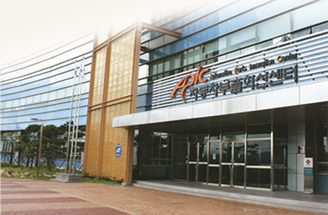
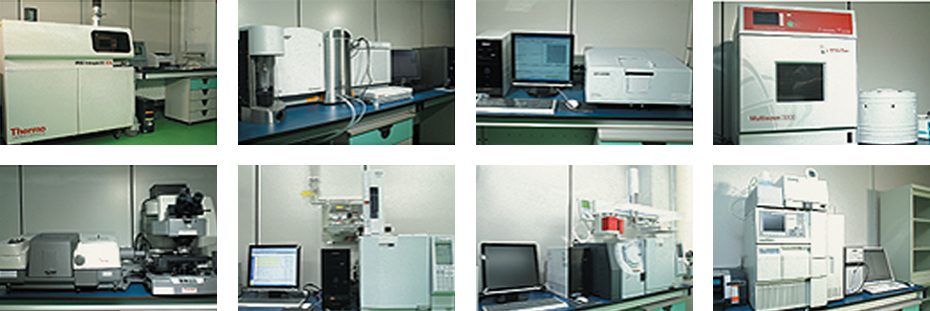
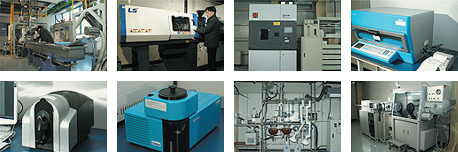
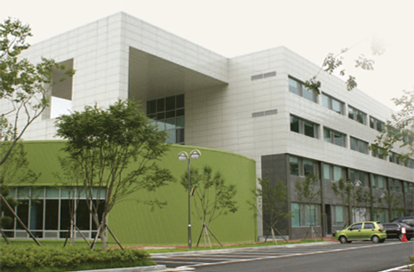

尖端研发设施及最佳环境
- Home
- 投资优势
- 投资环境
- 尖端研发设施及最佳环境
尖端研发设施及最佳环境
蔚山拥有公共研发机构和250余家企业附属研究所，在努力提高地区研发及创新能力。
汽车零配件新中心

汽车零配件创新中心是由产业通商资源部和蔚山广域市联合成立的汽车零配件产业综合支持机构，它在为蔚山 核心战略事业汽车零配件项目发挥中轴作用。
另外，有机集聚了东南圈汽车零配件企业，通过开发先进技术来提高汽车产业竞争力。
业务领域
设备共用 / 共同技术开发 / 企业扶持 / 教育培训 / 网络联系工作 / 创业保育
主要保有的设备现状
| 检测评估 | 安全测试 | 研究策划 | 配件开发 |
|---|---|---|---|
| 6轴运动模拟器(Half Car) | 撞车试验车牵引设备 | Hyperworks | 3D检测机 |
| 线性液压耐力检测机 | Dummy | Deform | 快速造型机(FDM) |
| MAST(多轴振动耐力检测机) | 高速数码相机 | Abaqus | 5轴高速加工机床 |
| 2轴疲劳试验机 | Europo Side Impact Test Cart | Nastran | 放电加工机床 |
| 噪音分析系统 | USA Side lmpact Test Cart | 激光焊机 | |
| 振动分析系统 | 静侧翻试验台架 | Patran | 激光热处理设备 |
| 多关节耐力检测机 | 后方冲击试验车燃料泄漏 | Magma | 大型离子硝化处理设备 |
| CT-X射线检测机(探伤) | 多关节3D检测仪 | Pam-Stamp | |
| 成分分析仪(EPMA) | 行人保护试验装备 | ||
| 视频显微镜 | 碰撞试验固定壁障 |
蔚山精细化学中心

精细化学中心是蔚山广域市和产业通商资源部联合为支持蔚山地区化学企业研发、 产品认证和评估而设立的研究支持设施。
该中心拥有先进的研究设施和设备，市场友和型技术开发力量和产学研网络，为了把蔚山地区石油化学工业发展成为高附加值和技术集约型精细化学工业而发挥核心作用。
业务领域
RIS业务 / 联网业务 / 企业孵化器业务 / 教育培训业务 / 检测生产业务 / 设备使用业务 / 研发业务
拥有设备(物质分析)
感应结合等离子体分光器 / 走查型电子显微镜 / 感应结合等离子体质量分析器 / 微波试件处理系统 / 红外线分光分析器 / 燃气色谱分析法 / 燃气色谱分析法质量分析器 / 高性能液体色谱分析法 / 总有机碳素分析器 / 紫外线-可视光线分光光度界 / X-线回折分析器 / 示差熱重量分析計 / 立道分析器 / 离子色谱分析法

保有设备(测试生产)
压出机 / 射出成形机 / 耐朽性试验器 / 道场硬化烤炉 / 电脑色彩调节器 / 分光光度器 / 薄膜蒸馏设备 / 升华炼制设备

韩国化学融合测试研究院岭南本部韩

韩国化学融合测试研究院是韩国代表性的测试、检查、认证机构，拥有优秀的人力资源和符合国际水平的专业性。
同时，该中心不仅在既有的测试分析领域取得成果，而且始终坚持研究新的技术领域，提供发达国家水平的高品质测试分析、评估、品质保证和认证服务。
业务领域
- 标准化研究开发
- 扶持业务 : 产学研共同技术开发协会 / 专利技术性评估 / 替代洗净技术扶持
- 产品认证 : Q(品质保证)MARK / S MARK(国家公认产品认证) / GQ(中小企业优秀产品)MARK
- 认证 : KS认证/ JIS认证/ SG MARK业务委托机构(日本) / 与RW TUV缔结业务协约(德国)
韩国化学研究蔚山新化学实用化中心

韩国化学研究院通过研究开发新药、新材料、持续增长化学技术等先进化学技术，不 仅对当前而且对未来一代的生活质量和环境的改善都有所贡献。
业务领域
- 绿色能源领域 : 氢气能源·太阳能等新型再生能源
- 石油化学工程高度化领域 : P2P高度统合网络、新催化剂/新流程、废弃物资源化
- 融/复合新材料领域 : 创出汽车/造船产业等的互动效益、开发高机能先进材料
- 精密化学领域 : 高附加价值化与先进化研究、技术转移相关实用化研究